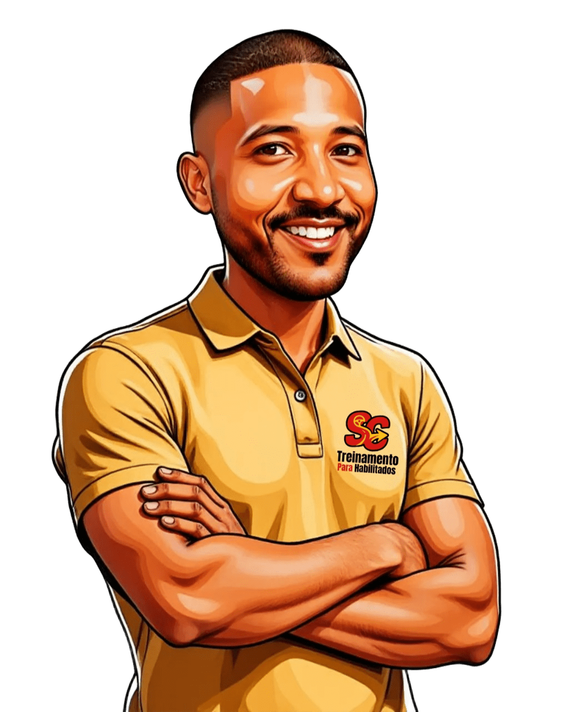

Escolha o serviço
Conte se busca habilitação, adição ou treinamento.
Primeira habilitação, adição de categoria ou apoio para vencer o medo de dirigir — com orientação próxima, prática e no seu ritmo.
Selecione uma opção para iniciar uma conversa já direcionada às suas necessidades.
Comece do zero com orientação para cada etapa.
Quero começar → 02Prepare-se para conquistar sua habilitação de moto.
Saiba mais → 03Formação prática e segura para dirigir automóveis.
Saiba mais → 04Formação completa para moto e carro.
Saiba mais → 05Amplie suas possibilidades com uma nova categoria.
Saiba mais → 06Recupere a confiança com treino personalizado e acolhedor.
Quero voltar a dirigir →Comece sua jornada pelo aplicativo oficial CNH do Brasil e avance com tranquilidade até a emissão do certificado.
A prova teórica do aluno só poderá ser marcada depois que o certificado for obtido.
Confira se a sua conta GOV.BR está ativa e em dia. Depois, baixe o aplicativo CNH do Brasil.
Abra o aplicativo e toque na opção “Educação”.
Na nova guia, toque em “Clique aqui para ser um condutor”.
Na tela seguinte, toque em “Começar minha jornada”.
Conclua todas as aulas dos módulos disponíveis no aplicativo.
Emita o certificado para dar entrada e continuar todo o processo da primeira habilitação.

Você pratica situações reais com acompanhamento paciente, sem julgamentos e com um plano adaptado ao que mais precisa desenvolver.
Conte se busca habilitação, adição ou treinamento.
Tire suas dúvidas sobre documentos, valores e horários.
Definimos o caminho ideal para o seu objetivo e ritmo.
Ganhe habilidade e confiança em cada nova etapa.
“Desbloqueei o medo de dirigir graças às aulas maravilhosas desse professor incrível.”
— Jane“Ele tirou todas as minhas dúvidas sobre o carro e sobre o trânsito.”
— Luana Oliveira Reis“Foi muito gratificante fazer parte da aprendizagem com esses profissionais.”
— Flavio Souza“Ótimo atendimento. Profissional de ótima qualidade, paciente e treinamento 100%.”
— Allamsnascimento Nascimento“Profissional de excelência, super didático. Adquiri minha CNH com ele.”
— Carlexandro Santos“Ótimo atendimento e ótimos profissionais. Consegui minha CNH com facilidade. Super indico!”
— Luis Sena“Instrutor paciente. Depois das minhas aulas com ele, comecei a sair sozinha.”
— Patrícia Silva Franco“Habilidade técnica e paciência não faltaram para o meu aprendizado.”
— Wesivaldo RezendeRua Santa Clara, 36 — Pernambués
Salvador — BA, 41130-070
Informações rápidas para você seguir com mais tranquilidade.
Entre em contato pelo WhatsApp, informe a categoria desejada e receba a orientação sobre cadastro, documentação e próximas etapas.
Para o treinamento direcionado a habilitados, é necessário possuir CNH válida. Se ainda não tem, escolha uma das opções de primeira habilitação.
Sim. As atividades são definidas conforme seu nível, suas dificuldades e o objetivo que deseja alcançar.
Sim. Estacionamento, baliza, rampas, trânsito e rotas do dia a dia podem fazer parte do plano.
Fale diretamente no WhatsApp para consultar disponibilidade e receber uma proposta adequada ao serviço desejado.
Seu próximo passo começa com uma conversa.
Falar no WhatsApp ↗